4.1. Függvények, görbék, felületek leírása és számítógépes ábrázolása.
Függvény: A függvény egy olyan egyértelmű hozzárendelés két halmaz elemei között, amely az első halmaz minden eleméhez a második halmaz pontosan egy elemét rendeli hozzá.
flowchart LR
subgraph X ["X"]
x1((•)) ~~~ x2((•))
x_un1((•)) ~~~ x_un2((•))
x3((•))
end
subgraph Y ["Y"]
y1((•)) ~~~ y_un1((•))
y_un2((•)) ~~~ y3((•))
end
%% A nyilak (leképezések) a pontok között
x1 --> y_un1
x2 --> y_un1
x3 --> y1
x_un2 --> y_un2
x_un1 --> y3
%% X halmaz az általad kért zöld színnel
style X fill:transparent,stroke:#66A88E,stroke-width:2px,rx:125,ry:125
%% Y halmaz egy harmonizáló kék színnel
style Y fill:transparent,stroke:#5C8EBD,stroke-width:2px,rx:125,ry:125
%% Pontok stílusa (sötétszürke, hogy jól látszódjanak)
classDef dot fill:transparent,stroke:none,color:#333333;
class x1,x2,x3,x_un1,x_un2,y1,y2,y3,y_un1,y_un2 dot;
%% Nyilak sötétszürke színnel a jobb láthatóságért
linkStyle 4,5,6,7,8 stroke:#777777,stroke-width:2px;
Függvények és görbék megadásának módjai:
1. Explicit megadási mód
A függő változót közvetlenül kifejezzük a független változóval. Mivel ez a hozzárendelés egyértékű (minden megengedett x-hez pontosan egy y tartozik), szigorú értelemben véve ez határoz meg függvényt.
Általános alak:y=f(x)
Példa:y=3x+5
Leképezés jelöléssel:f:R→R,x↦3x+5
2. Implicit megadási mód
Az összefüggést egy olyan egyenlettel adjuk meg, amelyben x és y egy oldalon, együtt szerepelnek. Ez nem feltétlenül függvény, mert egy x helyhez több y érték is tartozhat (például egy kör esetében). Alapvetően egy két valós számból álló párhoz rendel egy valós számot. Fontos tulajdonsága, hogy nem mindig tudjuk explicit alakra hozni.
Általános alak:F(x,y)=0
Példa:x2+y2−9=0 (origó középpontú, 3 sugarú kör egyenlete)
Leképezés jelöléssel:F:R×R→R
3. Paraméteres (vektoros) megadási mód
A görbét helyvektorokkal adjuk meg, ahol a vektorok végpontjai rajzolják ki magát a görbét. A leképezés egy valós számhoz (a paraméterhez) egy síkbeli helyvektort rendel.
Általános alak:r(t)=(x(t),y(t))
Példa:r(t)=(3cos(t)+3sin(t))
Leképezés jelöléssel:f:R→V2, ahol egy valós intervallumot (R) képezünk le a síkbeli helyvektorok halmazába (V2).
Módszerek használata
Explicit függvények használata
Az explicit módon megadott függvények, vagyis a y=f(x) alakú összefüggések, egyszerűen használhatók görbék kirajzolására. A módszer lényege, hogy különböző x értékekhez meghatározzuk a hozzájuk tartozó y értékeket, majd ezeket a pontokat megjelenítjük, illetve szakaszokkal összekötjük.
Ez a megközelítés sok esetben hatékony és gyors. Egy egyenesnél, például y=3x+5 esetén nem szükséges minden egyes pontot külön kiszámolni, mert az egyenes alakja már két pontból is egyértelműen meghatározható. Ilyenkor elegendő két pontot megadni, majd közöttük egy szakaszt húzni.
Görbéknél, például y=x2 esetén, általában nem minden lehetséges x értéket vizsgálunk meg, hanem csak bizonyos lépésközönként mintavételezünk, például minden 5. vagy 10. értéknél. A kapott pontokat ezután szakaszokkal kötjük össze. Mivel sok esetben nem tökéletes matematikai pontosságra, hanem vizuálisan megfelelő megjelenítésre törekszünk, ez a módszer jelentősen csökkentheti a számítási igényt.
Előnyei
Egyszerű, mert minden x értékhez közvetlenül meghatározható a megfelelő y.
Gyorsan kirajzolható, főleg akkor, ha ritkább mintavételezést használunk.
Kevés erőforrást igényel.
Könnyen megvalósítható programozás során.
Szakaszokkal összekötve a pontokat jól használható közelítést ad.
Korlátai
Egy adott x értékhez csak egyetlen y érték tartozhat.
Emiatt nem írható le vele minden görbe egyetlen explicit függvénnyel.
Nem lehet vele közvetlenül olyan alakzatokat ábrázolni, amelyek „visszafordulnak” az x tengely irányában.
Például egy teljes kör vagy egy oldalra nyíló parabola nem adható meg egyetlen y=f(x) alakban.
Az ilyen grafikon csak olyan alakot tud leírni, amely balról jobbra haladva minden x-hez legfeljebb egy pontot rendel.
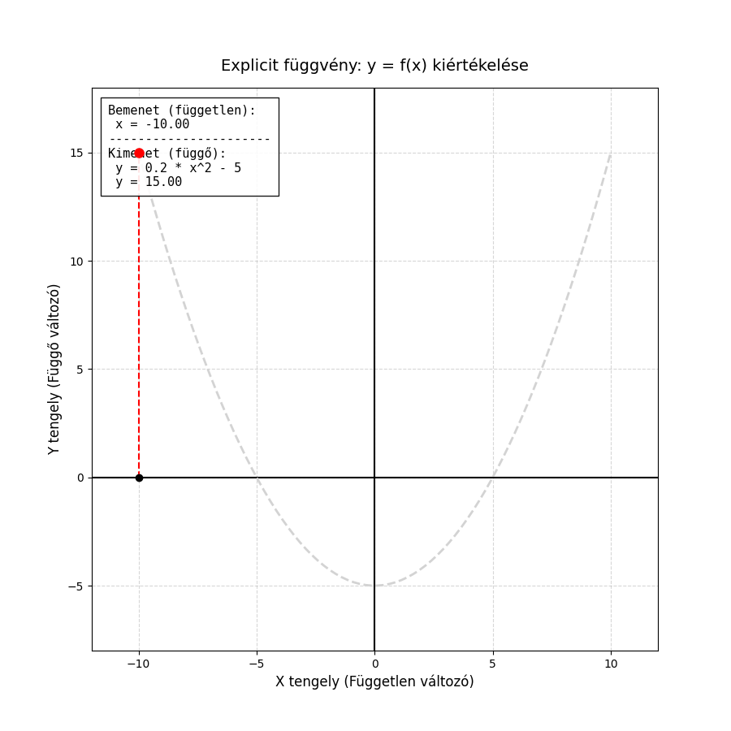
Implicit görbék használata
Az implicit görbéket általában f(x,y)=0 alakban adjuk meg. Ilyenkor nem közvetlenül számítjuk ki az egyik változót a másikból, hanem azt vizsgáljuk, mely (x,y) pontokra teljesül az egyenlet.
Ez az alak általánosabb, mint az explicit függvény, mert egyetlen x értékhez több y érték is tartozhat. Emiatt olyan görbék is leírhatók vele, amelyek explicit formában nem adhatók meg egyszerűen.
A megjelenítés viszont számításigényesebb: a sík sok pontjában kell kiértékelni az egyenletet, hogy kiderüljön, hol fut a görbe. Ez sok erőforrást igényelhet, különösen nagy felbontás vagy bonyolult alak esetén.
Előnyei
Általánosabb leírásmód, mint az explicit forma.
Olyan görbéket is kezel, amelyekhez egy x-hez több y tartozik.
Sok geometriai alak egyszerűbben írható fel vele.
Hátrányai
A kirajzolása nehezebb és lassabb.
Naiv megközelítésben sok pontot kell kipróbálni.
A vizualizáció összetettebb algoritmusokat igényelhet.
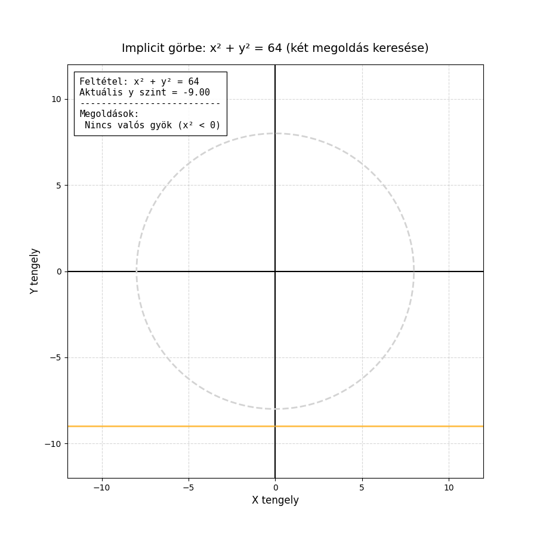
Paraméteres görbék használata
A paraméteres görbék esetében a pontok koordinátáit nem egyetlen összefüggéssel adjuk meg, hanem külön koordinátafüggvényeket használunk egy független t paraméter (például az idő) függvényében. Minden t értékhez egyértelműen kiszámítható egy x és egy y koordináta.
Megjelenítése szinte olyan egyszerű, mint az explicit függvényeké. A módszer lényege, hogy egy ciklus segítségével lépésről lépésre végighaladunk a t paraméter értelmezési tartományán, és a kapott (x,y) pontokat megjelenítjük, majd szakaszokkal összekötjük. A görbe finomságát és vizuális minőségét kizárólag a t lépésközének sűrűsége határozza meg.
Mivel az x és y értékeket a t paraméter egymástól függetlenül vezérli, a görbe mentesül az explicit függvények korlátaitól. Szabadon „maga alá görbülhet”, alkothat hurkokat vagy teljesen zárt alakzatokat, miközben elkerüli az implicit görbék kirajzolásának nagy erőforrást igénylő, az egész síkot vizsgáló mintavételezését.
Előnyei
Szinte olyan egyszerű a kirajzolása és programozása, mint az explicit függvényeké.
Rendkívül rugalmas: mivel a tengelyek koordinátái függetlenek, a görbe bátran „visszafordulhat” az x tengely mentén is.
Közvetlenül és hatékonyan alkalmazható zárt alakzatok (például kör) és bonyolult, önmagukat metsző hurkok leírására.
Sokkal kevesebb számítási erőforrást igényel a vizualizációja, mint az implicit görbéké, hiszen célzottan csak a görbe pontjait generáljuk le.
Korlátai
Ha a t paraméter lépésköze túl ritka, a kapott alakzat szögletessé, pontatlanná válik.
Ha a lépésköz túl sűrű, az feleslegesen növeli a számítási időt anélkül, hogy a vizuális eredmény láthatóan javulna.
Nehezebb lehet meghatározni róla, hogy egy tetszőleges (x,y) pont pontosan rajta van-e a görbén, mint az implicit egyenletek esetében.
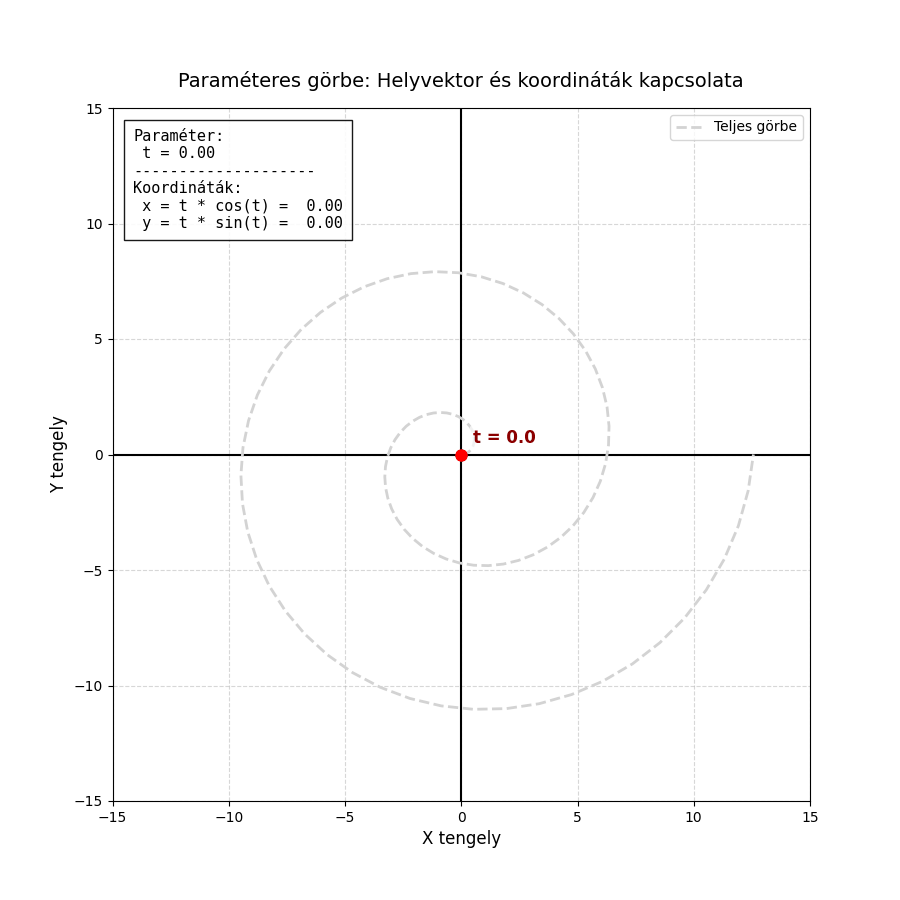
Görbék megadása térben
Csak paraméteres módon lehet őket megadni.
r(t):R↦V3r(t)=(x(t),y(t),z(t))
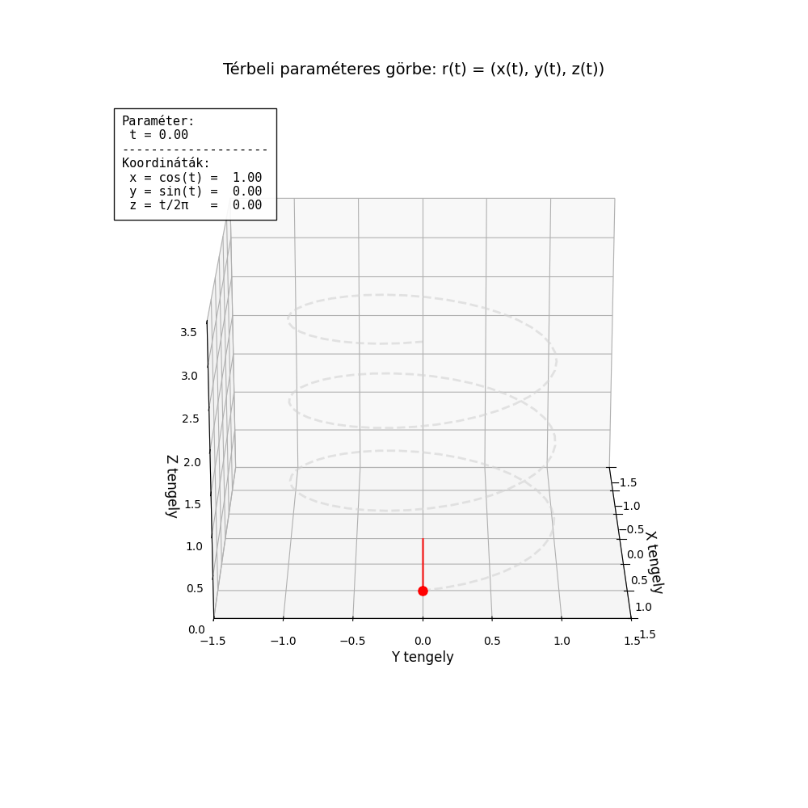
Explicit felületmegadás
Térbeli felületek legegyszerűbb megadási módja az explicit alak, amelyet z=f(x,y) egyenlettel, matematikai jelöléssel f:R×R↦R formában írhatunk fel.
Ennek lényege, hogy a vízszintes alapsík (az XY sík) minden egyes (x,y) koordinátapárjához – vagyis a tér egy adott helyzetéhez – a függvény pontosan egy z magassági értéket rendel hozzá. A vizualizáció során a vízszintes síkot egy sűrű rácsra osztjuk fel, minden rácspontra kiszámítjuk a magasságot, majd az így kapott térbeli pontokat összekötjük. Ennek eredményeként egy folytonos, hálószerű felületet kapunk.
Előnyei
Könnyen programozható és gyors: Az algoritmus rendkívül egyszerű, hiszen csak végig kell lépkedni az alapsík x és y koordinátáinak hálóján, és a képletbe behelyettesítve azonnal megkapjuk a harmadik dimenziót.
Látványos megjelenítés: Rácsként (drótvázként) vagy árnyékolt felületként megjelenítve nagyon jól értelmezhető, átlátható térbeli képet ad a függvény viselkedéséről.
Korlátai
Nem tud "maga alá hajolni": Akárcsak a kétdimenziós explicit görbék esetében, itt is szigorú szabály, hogy egy adott (x,y) alapponthoz kizárólag egyetlen z érték tartozhat.
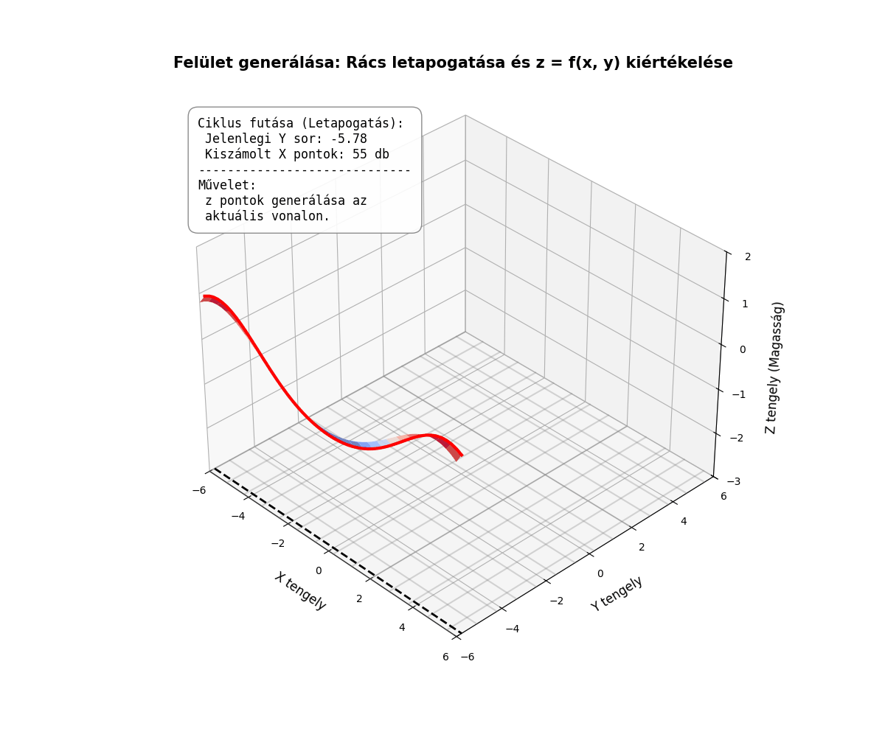
Implicit felületek használata
Az implicit felületeket egy f(x,y,z)=0 alakú, háromváltozós egyenlettel adjuk meg. Ennél a módszernél nem egy konkrét változót (például a magasságot) számoljuk ki a többiből, hanem a 3D tér pontjairól döntjük el, hogy kielégítik-e a feltételt. Amelyik (x,y,z) pont behelyettesítése után az egyenlet eredménye nulla, az a pont a felület része.
A megjelenítése hagyományos eszközökkel roppant nehézkes. Leggyakrabban réteges (térfogati) megközelítést alkalmaznak: a vizsgált teret felosztják egy 3D-s rácsra (voxelekre), és minden egyes pontban kiértékelik a függvényt. Ahol a függvény értéke átlépi a nullát, oda a program felületet generál (például az ismert Marching Cubes algoritmussal).
Előnyei
Páratlan rugalmasság: Egyetlen elegáns egyenlettel leírhatók teljesen zárt, összefüggő alakzatok (például egy gömb: x2+y2+z2−r2=0), bonyolult topológiák, vagy akár egymásba olvadó "cseppek" (metaballok).
Kiválóan alkalmas olyan területeken, ahol a térfogat a lényeg, például orvosi képalkotásnál (CT, MRI rétegek) vagy folyadékszimulációknál.
Korlátai
Extrém erőforrásigény: Mivel nemcsak magát a felületet, hanem a tér rengeteg "üres" pontját is végig kell vizsgálni, a számítási idő a felbontás növelésével köbösen nő.
Emiatt a hagyományos 3D modellezésben és valós idejű megjelenítésben (pl. játékok) önálló módszerként ritkán használják, inkább csak speciális (réteg)megoldásokra korlátozódik.
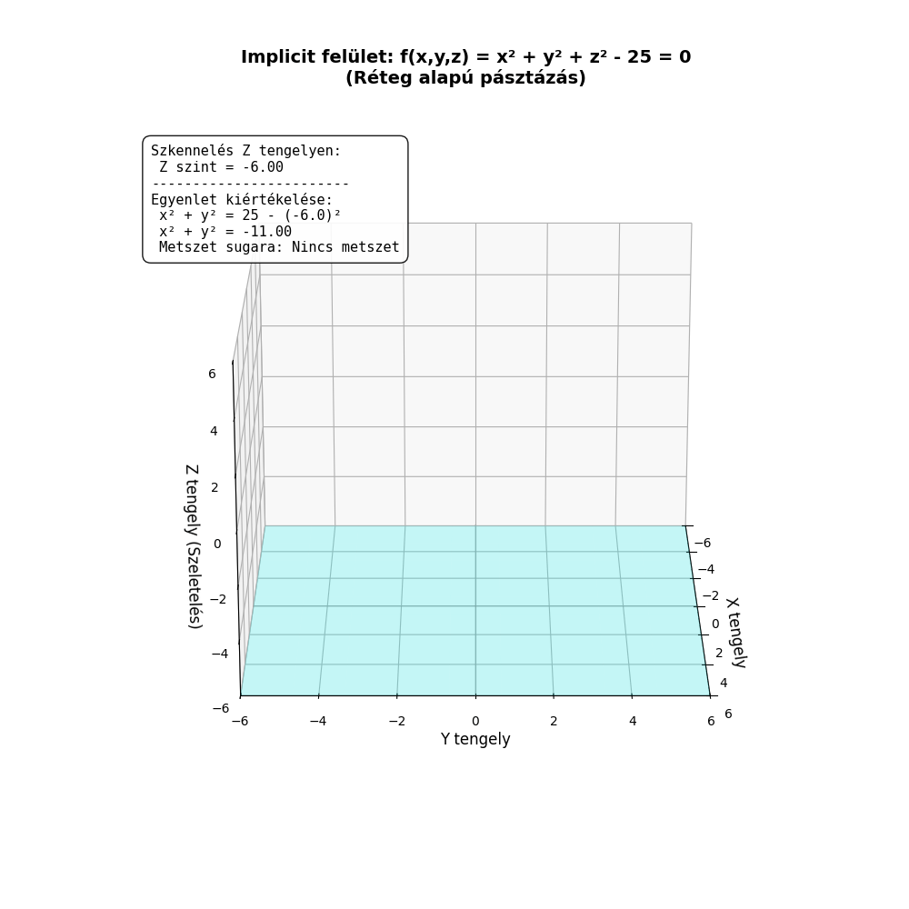
Paraméteres felületek használata
Mivel térbeli felületekről beszélünk, egyetlen paraméter (amely csak egy vonalat húzna) már nem elegendő. A felületek paraméteres megadásához két független paraméterre van szükségünk, amelyeket általában s és t betűkkel jelölünk. A matematikai felírás vektoros alakban a következő:
r(t,s)=x(t,s)y(t,s)z(t,s)
Ebben az esetben az s és t paraméterek egy kétdimenziós "paramétersíkot" alkotnak. A térbeli felület kirajzolásának algoritmusa egy dupla ciklusra épül: a külső ciklus végigmegy az egyiken (pl. s), a belső ciklus pedig a másikon (pl. t). Ahogy bejárjuk ezt a 2D-s paraméter-rácsot, a koordinátafüggvények minden (s,t) párt "kivetítenek" a 3D-s tér egy (x,y,z) pontjára. Mivel a felületet rácspontok hálózatából építjük fel, az eredmény egy térbeli, rácsszerű drótváz vagy felület lesz.
Előnyei
Szabad topológia (maga alá hajolhat): Szemben az explicit (z=f(x,y)) felületekkel, itt a tér mindhárom koordinátáját a független s és t paraméterek irányítják. Emiatt a felület gond nélkül visszahajolhat önmaga alá, alkothat hurkokat, vagy leírhat teljesen zárt testeket (például gömböt vagy tóruszt).
Rendkívül gyors és hatékony: Csak azokat a pontokat számoljuk ki, amelyek ténylegesen a felületen vannak (nincs felesleges üres tér vizsgálat, mint az implicitnél).
Kiválóan programozható: A dupla ciklusos módszer és az általa generált négyszöges rácsháló tökéletesen illeszkedik a modern 3D grafikus motorok (pl. OpenGL, DirectX) poligon-alapú működéséhez.
Korlátai
Ha a paraméteres rács felbontása nem egyenletes (a képletek torzítanak), a felület bizonyos pontokon túl sűrű, máshol túl ritka, "szögletes" lehet.
Bonyolultabb matematikai felírást igényel a koordinátafüggvények megtervezése, mint egy sima explicit egyenlet.
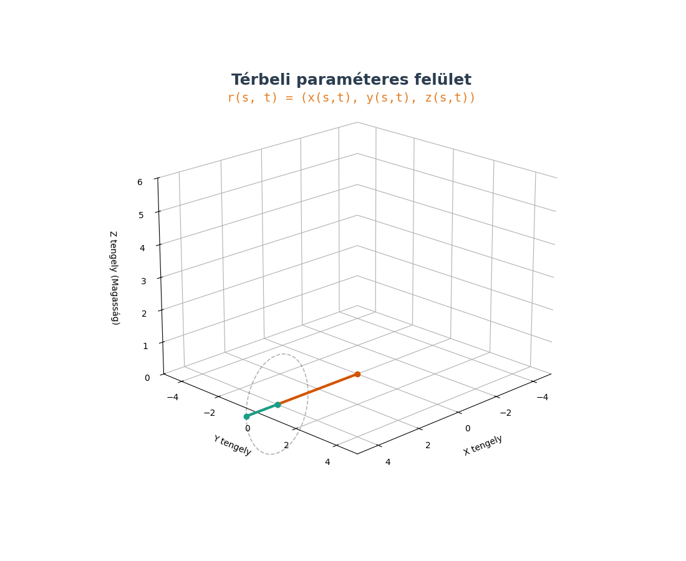
Extra (lehet nem kell)
Lagrange-interpoláció
A Lagrange-interpoláció egy klasszikus módszer, amelynek célja, hogy adott n+1 számú kontrollpontra egy olyan n-edfokú polinomot illesszen, amely minden ponton pontosan áthalad.
Alapelvek és megadási módok
A módszer lényege, hogy a görbét pontok súlyozott összegeként állítja elő. Megadható:
Explicit módon:y=P(x) alakban, ahol a polinom közvetlenül az y értéket határozza meg.
Paraméteres módon:x(t) és y(t) koordinátafüggvényeket határozunk meg külön-külön. Ez lehetővé teszi önmagába visszatérő vagy "hurok" alakzatok leírását is.
Paraméter meghatározása (Paraméteres esetben)
Mivel a pontokhoz egy t paramétert kell rendelnünk, két fő stratégiát alkalmazunk:
Uniform (egyenletes): A t paraméter értékei egyenletesen követik egymást (0,1,2...). Egyszerű, de torzíthat, ha a pontok térbeli távolsága nem egyenletes.
Húrhossz szerinti (Chord-length): A paraméterközöket a szomszédos pontok közötti tényleges távolság alapján osztjuk ki, ami természetesebb görbületet eredményez.
Előnyei
Mindig működik: Matematikailag bizonyítható, hogy adott pontokhoz pontosan egy ilyen minimális fokszámú polinom létezik.
Általános és algoritmizálható: Direkt képlettel számolható, nem igényel bonyolult iterációt.
Pontosság: Garantáltan érinti az összes megadott alappontot.
Hátrányai
Magas fokszámú polinomok: Sok pont esetén a polinom fokszáma megnő, ami számításigényessé teszi.
Oszcilláció (Runge-jelenség): A Lagrange-interpoláció legnagyobb hibája, hogy nagyszámú pont esetén a görbe a széleken vadul lengeni (oszcillálni) kezd.
Instabilitás: Egyetlen pont kismértékű elmozdulása a görbe távoli szakaszait is drasztikusan megváltoztathatja.
Bonyolult egyenletrendszer: Nagy adatállományoknál a polinom együtthatóinak meghatározása instabillá válhat.
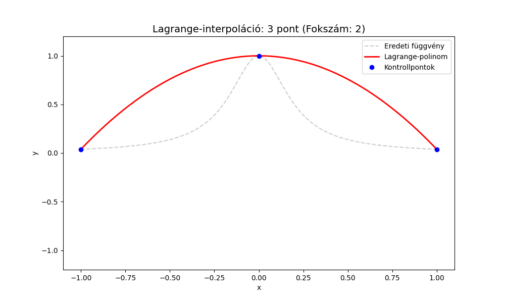
Hermite-interpoláció
A Hermite interpoláció a görbeillesztés egy olyan módszere, amely nemcsak a megadott pontokon halad át pontosan, hanem a pontokban előírt érintővektorokat (levezetetteket) is tiszteletben tartja.
Miközben a Lagrange-interpoláció oszcillációs problémákkal küzd, ha sok pontot használunk, a Hermite módszer ezt egy okos trükkel kerüli meg: szakaszokra (darabokra) bontja a feladatot. Ahelyett, hogy egyetlen, hatalmas fokszámú polinomot illesztene az összes pontra, mindig csak két szomszédos pont között rajzol egy alacsony fokszámú görbét.
Hogyan működik?
Két szomszédos pont, Pi és Pi+1 között egy köbös (harmadfokú) polinomot feszítünk ki. Egy köbös polinomnak 4 szabadságfoka van (a t3,t2,t,1 együtthatói). A 4 feltétel, ami egyértelműen meghatározza ezt a szakaszt:
A görbe a t=0 időpillanatban a Pi pontban indul.
A görbe a t=1 időpillanatban a Pi+1 pontba érkezik.
A görbe kezdősebessége (t=0) megegyezik a Vi érintővektorral.
A görbe végsebessége (t=1) megegyezik a Vi+1 érintővektorral.
A teljes görbe ezekből a kis, egymáshoz fűzött köbös darabokból áll össze.
Előnyök
Hátrányok
Nincs oszcilláció: A szakaszos felépítés miatt elkerülhető a Runge-jelenség.
Hiányzó adatok: A módszer megköveteli az érintővektorokat, amelyek gyakran nem állnak rendelkezésre.
Helyi vezérlés: Egy pont vagy érintő módosítása csak a szomszédos szakaszokat érinti, nem az egész görbét.
Felhasználói hiba: Ha a felhasználónak kell megadnia az érintőket, előfordulhat, hogy rosszul, természetellenesen adja meg őket, ami "töréseket" okoz a görbén.
Sima átmenet: Garantálható a C1 folytonosság (azaz a görbe nemcsak folytonos, de az érintője is simán változik a pontokon áthaladva).
Látványos hibák: Rosszul megválasztott érintők esetén a görbe furcsán megrándulhat a pontok között.
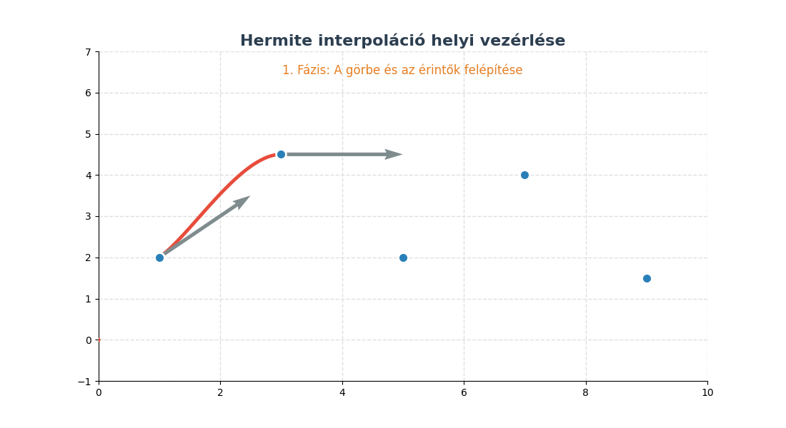
Bézier-görbe
A Bézier-görbe a számítógépes grafika (pl. Illustrator, Photoshop, SVG, fontok) legnépszerűbb görbeillesztési módszere. A Hermite-interpoláció alapjaira épül, de a nehezen kezelhető érintővektorokat vizuálisan könnyebben mozgatható kontrollpontokkal helyettesíti.
A köbös (harmadfokú) Bézier-görbe
A legelterjedtebb változatot 4 pont határozza meg:
P0 (Kezdőpont): Innen indul a görbe (t=0).
P1 (Első kontrollpont): Meghatározza a kezdőpontból kilépő érintő irányát és "erősségét".
P2 (Második kontrollpont): Meghatározza a végpontba érkező érintő irányát.
P3 (Végpont): Ide érkezik a görbe (t=1).
Fontos: A görbe csak a P0 és P3 pontokon halad át, a P1 és P2 pontok csak mágnesként húzzák maguk felé a vonalat.
Általánosítás és Spline-ok
Általánosítás (n-edfokú): A módszer tetszőleges számú pontra kiterjeszthető. Hátránya, hogy sok pontnál a görbe ellaposodik, és egyetlen pont mozgatása az egész görbére hatással van (nincs lokális vezérlés).
Bézier-Spline: Az előbbi probléma miatt a gyakorlatban rövid, harmadfokú (4 pontos) Bézier-szakaszokat fűznek egymás után.
Folytonosság (C1): Két Bézier-szakasz akkor csatlakozik simán (törésmentesen), ha a csatlakozási pont és a két szomszédos kontrollpontja egyetlen közös egyenesre esik.
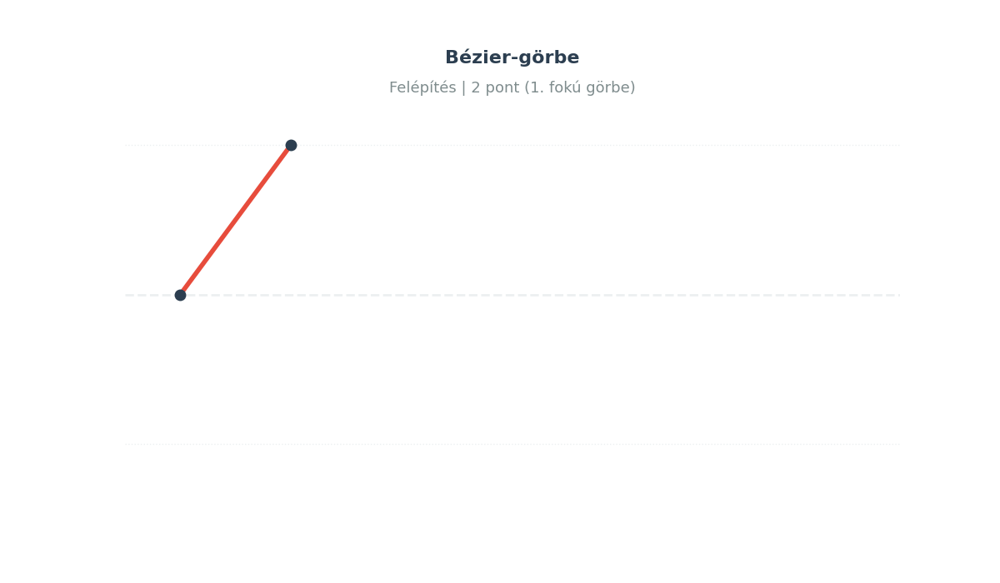
4.2. Problémák reprezentálása állapottéren. A megoldás keresése visszalépéssel. Szisztematikus és heurisztikus fa- és gráfkereső eljárások.
Problémák reprezentálása állapottéren
Céunk egy probléma absztrakt leírása. Honnan indulunk, mi a cél, hogyan milyen állapotokba kerülhetünk. Mindezt formálisan, absztrakt módon, mindenféle implemntációs részletet nem figyelembevéve.
A kényszerkielégítési feladatok lényege, hogy a megoldást nem egyetlen lépésben keressük, hanem változók és a rájuk vonatkozó szabályok (kényszerek) rendszereként modellezzük.
A feladat formális definíciója
Egy kényszerkielégítési feladatot három fő összetevő alkot:
Változók (X): Azok az elemek, amiknek értéket kell adnunk.
Példa (Ausztrália): Az államok halmaza: X={WA, NT, SA, Q, NSW, V, T}.
Tartományok (D): A változók által felvehető lehetséges értékek.
Példa: A választható színek: D={piros, zo¨ld, keˊk}.
Kényszerek (C): Szabályok, amik megadják, mely érték-kombinációk megengedettek.
Példa: Szomszédos államok színe nem egyezhet meg (WA=NT, WA=SA, stb.).
A kényszergráf a probléma absztrakt vizualizációja, amely segít megérteni a változók közötti függőségeket:
A csomópontok felelnek meg a változóknak (államok).
Az élek jelölik a kényszereket (pl. közös határ megléte).
Ausztrália térképén SA (Dél-Ausztrália) a gráf legkritikusabb pontja, mivel ez a csomópont kapcsolódik a legtöbb államhoz. A keresés során az ilyen, sok kényszerrel rendelkező változók korai színezése gyakran felgyorsítja a megoldást, mivel hamarabb kiderül, ha egy irány zsákutcába vezet.
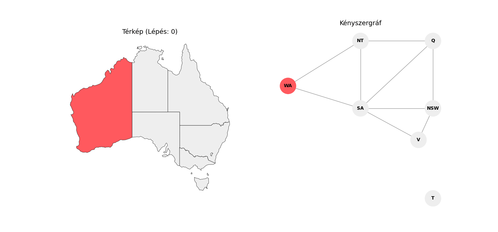
Kényszerkielégítési feladatok fajáti:
Diszkrét tartományok:
Az értékek elkülöníthető, különálló egységek (pl. egész számok, nevek).
Véges tartományok: Az értékek halmaza fix és felsorolható.
Folytonos tartományok:
Az értékek egy adott intervallumon belüli valós számok (R). Itt az értékek között végtelen sok további érték található.
Példa: Robotkar ízületi szögeinek beállítása, Hubble űrteleszkóp pontos pozicionálása, vegyipari folyamatok hőmérséklet- és nyomásértékei.
Kényszerek fajtái:
Kemény kényszerek
Ezeket a kényszereket kötelező kielégíteni a valid megoldáshoz. A bennük szereplő változók száma alapján lehetnek:
Unáris: Egyetlen változóra vonatkozik. Korlátozza a változó tartományát.
Példa:SA=Zo¨ld (Dél-Ausztrália nem lehet zöld).
Bináris (Binary): Pontosan két változó közötti kapcsolatot ír le. A kényszergráf élei ezeket reprezentálják.
Példa:SA=WA (Dél-Ausztrália és Nyugat-Ausztrália színe különböző kell legyen).
Magasabb rendű: Három vagy több változót érintenek.
Példa:Alldiff(X1,X2,X3) – mindhárom változónak különböző értéket kell felvennie (például Sudokuban egy sor elemei).
Puha kényszerek
Ezek nem feltétlen szabályok, hanem preferenciák. Nem teszik érvénytelenné a megoldást, de skálázhatóvá teszik annak "jóságát".
Lényege: Céljuk a megoldások közötti optimalizáció (pl. a legolcsóbb vagy leggyorsabb megoldás keresése).
Példa: "Szeretném, ha WA vörös lenne, de ha nem megoldható, a zöld is megfelel."
Kezelése: Gyakran költségfüggvényekkel vagy súlyozással kezelik.
Visszalépéses keresés
A visszalépéses keresés a kényszerkielégítési problémák alapvető, mélységi keresésen alapuló megoldási algoritmusa. Alapvetései:
Kommutativitás: A változók értékadásának sorrendje nem befolyásolja a végeredményt, ezért a keresési fa adott szintjén elegendő egyetlen változó lehetséges értékeit vizsgálni.
Szekvenciális értékadás: A gráf minden csomópontjában szigorúan csak egyetlen változóhoz rendelünk értéket.
A visszalépéses keresés hatékonyságának növelése
A vak keresés teljesítménye drasztikusan javítható, ha heurisztikákat alkalmazunk az alábbi három döntési ponton:
Változóválasztás: Melyik változóhoz rendeljünk értéket legközelebb?
Értékválasztás: Milyen sorrendben próbáljuk ki a lehetséges értékeket az adott változónál?
Következtetés (Inferencia): Hogyan ismerhetjük fel a lehető legkorábban, ha egy ág zsákutcába vezet?
1. Változóválasztási heurisztikák
Legkevesebb fennmaradó érték (MRV - Minimum Remaining Values):
Azt a változót választjuk, amelynek a tartományában a legkevesebb megengedett érték maradt. Célja: A "fail-fast" elv érvényesítése. Ha egy ág zsákutca, azt minél hamarabb ismerje fel az algoritmus, minimalizálva a bejárandó részfát.
Fokszám heurisztika (Degree Heuristic):
Holtverseny (több azonos MRV) esetén alkalmazzuk. Azt a változót választjuk, amely a legtöbb kényszerben (élben) szerepel a még hozzárendeletlen változók felé.
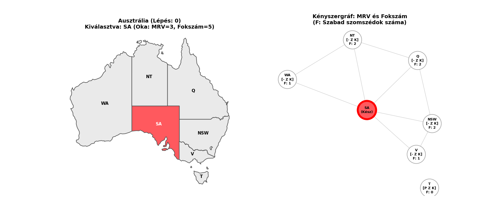
2. Értékválasztási heurisztika
Legkevésbé korlátozó érték (LCV - Least Constraining Value):
A lehetséges értékek kipróbálási sorrendjét határozza meg. Azt az értéket választjuk, amely a szomszédos, még szabad változók számára a legtöbb megengedett értéket hagyja meg (a legkevesebb értéket zárja ki a tartományukból).
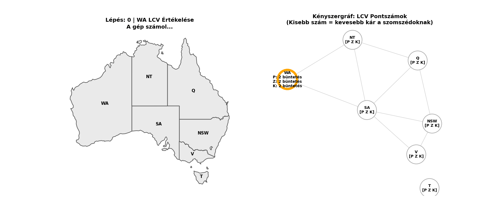
3. Következtetési és szűrési módszerek (Zsákutcák korai felismerése)
Előrenéző ellenőrzés (Forward Checking):
Nyilvántartjuk a szabad változók lehetséges értékeit (tartományát). Minden értékadás után azonnal töröljük a szomszédos változók tartományából azokat az értékeket, amelyek sértik a kényszert. Ha bármely változó tartománya kiürül, az algoritmus megállítja a keresést és visszalép.
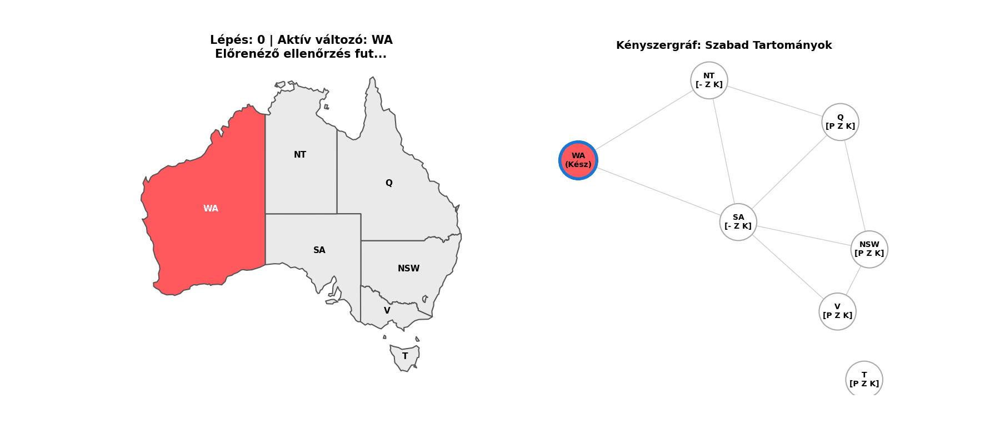
Élkonzisztencia (Arc Consistency - AC-3):
Az előrenéző ellenőrzésnél szigorúbb szűrési módszer, amely képes láncreakciószerűen terjeszteni (propagálni) a kényszereket. Definíció: Egy irányított X→Y él (kényszer) akkor konzisztens, ha az X változó tartományának minden egyes x értékéhez létezik olyan y érték az Y változó tartományában, amely kielégíti a kényszert. Minden értékadás után lefuttatjuk, így minden érintett élt konzisztenssé teszünk.